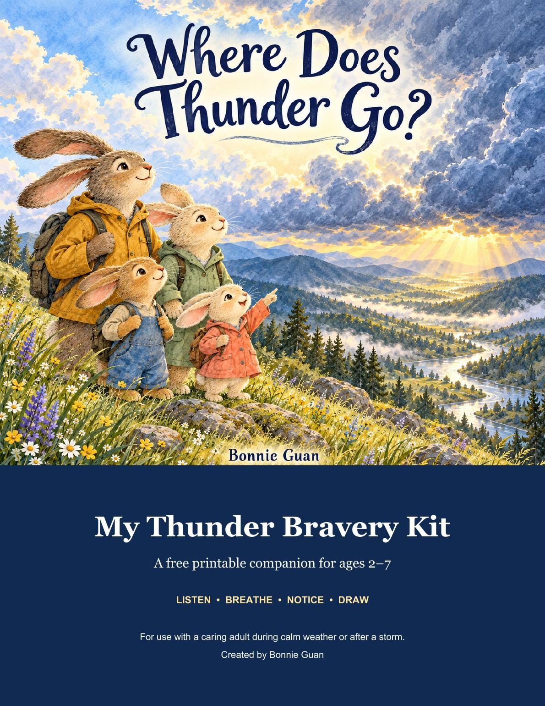
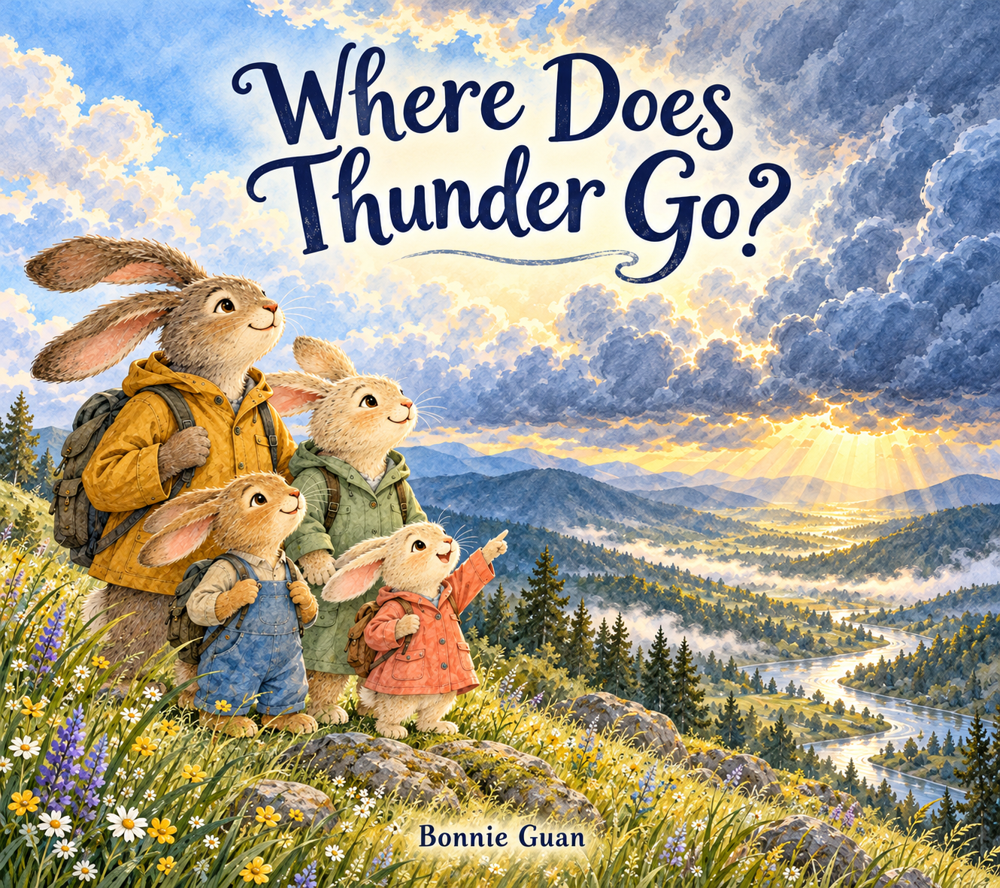

Sound Hunt
Notice everyday sounds together and describe whether they feel near, far, soft, or loud.
A free printable for families with children ages 2–7
My Thunder Bravery Kit turns stormy-day worries into calm breathing, curious observation, drawing, and gentle conversation.
Six printable pages · No sign-up required · Best used with a caring adult

Inside the kit
Notice everyday sounds together and describe whether they feel near, far, soft, or loud.
Trace one hand slowly while breathing in and out to help the body settle.
Look for clouds, light, rain, wind, and other clues in the changing sky.
Turn a mysterious sound into lines, colors, shapes, or a playful character.
Use five child-friendly prompts to talk about fear, curiosity, safety, and courage.

The story behind the activities
Four curious rabbits follow a mysterious rumble through the natural world. Along the way, a frightening sound becomes a warm family adventure about questions, connection, and taking one brave step together.
For parents, carers, and educators
Ready for your next stormy-day conversation?